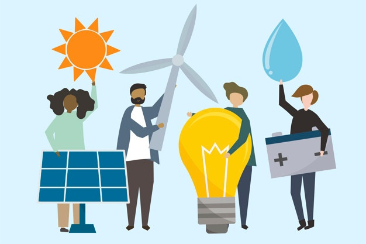

A Hurdle Towards Clean Engergy
September 27, 2021 by Ronae Johnson
Energy consumption and generation are two pivotal challenges that have continually confronted Caribbean nations. The effects of these
challenges are evident in the increasing cost for oil as well as domestic electricity rates in Caribbean countries. It is for these reasons
and more why there is an overwhelming necessity for the transition away from fossil fuels and towards the realm of sustainable energy.
However, there are a few issues that hinder the transition towards renewables in many CARICOM member states.
One of the issues CARICOM member states face that hinder their transition to renewables is the uncertainty in the
energy prices, as such projections are coherent regarding the oil and gas industry prices. As most of the costs for renewable energy are from
the upfront expenses of building and installing solar and wind farms; questions about if the investment was worth it would have been raised.
In 2017 the average cost to install solar systems was $2000 per kilowatt compared to $1000 per kilowatt for a new natural gas plant. This
higher construction cost would make financial institutions perceive renewable energy as a risky investment compared to the coherent and stable
cost of gas and oil with a lower construction cost for a power plant. One way of combating the issue of high installation prices for renewables
is by using a method known as energy auctions. This is where countries ask for competitive bids for large-scale energy contracts (power plants).
The country then chooses the energy project developer with a contract that offers the lowest possible price.
Agile Development and Scrum
September 27, 2021 by Ronae Johnson

Software project managers have the important task of ensuring that the software is delivered on time and within the confines of the project’s budget.
This would require an agile project management approach rather than a plan-driven approach. SCRUM is an agile method that focuses on managing iterative development,
which is suitable for agile development. SCRUM has three phases in which it approaches agile development.
First is the initial phase where an outline plan is done to help establish the general objectives for the project. This is then followed by
the sprint cycle which is a key part of SCRUM. In this phase work that is to be done from the backlog is selected, where after the team arrange
themselves to advance the software. While the team is in the development stage, they are isolated from the customer and the organization. So, to leverage this
communication barrier a Scrum master is assigned, and it is his or her responsibility to interface with the company. This will ensure that team
is not distracted from the task they have selected to complete while also maintaining a level of communication. The team would also engage in daily meetings known as scrum.
This is where they review the progress of the software they are developing as well as priorities work to be done that day. At the end of the sprint cycle, an
increment to the software is typically delivered. This software increment is said to be in a finished state with further work needing to be done on it.
The last phase of SCRUM sees the closure of the project, the completion of the required documentation such as help frames and
user manuals, and an evaluation of the lessons learned from the experience. Scrum is just one of the methods project managers can use to help them govern
projects that require the quick delivery of software quickly within a set budget.